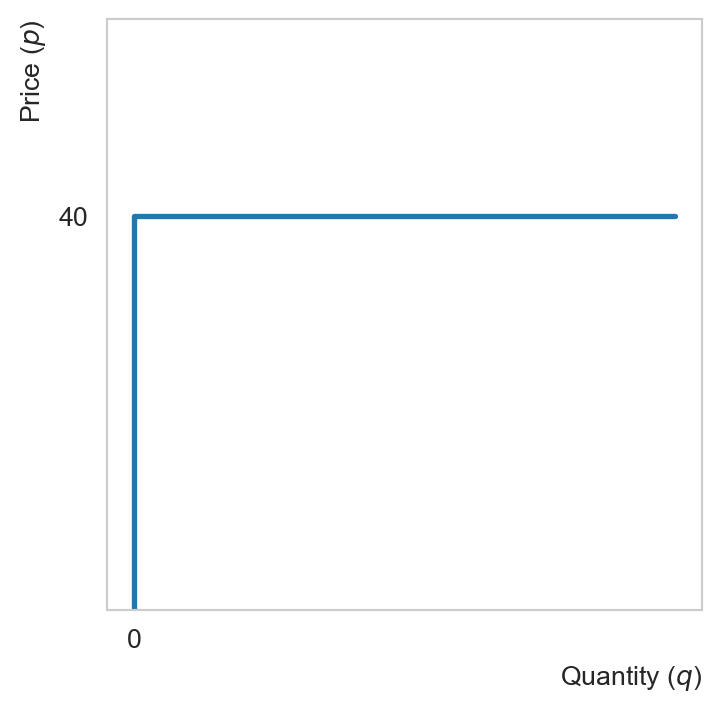

%load_ext autoreload
%autoreload 2import numpy as np
import matplotlib.pyplot as plt
from matplotlib import cm
import seaborn as sns
import pandas as pd
import dataframe_image as dfi
import ipywidgets as widgets
from IPython.display import display
from ipywidgets import interact
import pandas as pdimport sys
import os
mod_dir = os.path.join(os.getcwd(), 'modules')
if mod_dir not in sys.path:
sys.path.append(mod_dir)
import micro_modules as mm
mm.load_viz_settings()In this chapter we will be examining market equilibria. We shall begin by deriving the market supply curve, which results from firms’ optimal production decision. Likewise, market demand results from consumers’ optimal consumption decision. Searching for an equilibrium is essentially searching for prices that equalize demand and supply in the market. When a single market is considered in isolation, its equilibrium is a partial one. When all markets are considered, we speak of a general equilibrium. In a pure exchange economy, all markets are markets of consumption goods. In a production economy, the relevant markets include those of factors of production such as labor, capital and land. In this course, we will be mostly interested in general equilibria in a pure exchange economy.
Perfectly competitive markets
Our markets in this chapter are perfectly competitive, their features are:
Fragmentation: large number of producers and consumers whose decisions (to produce or consume) do not influence market prices of the goods. In other words, all market participants are price-takers
Undifferentiated products: products of all firms in the same industry are regarded as identical by consumers
Perfect information: information on prices are transparent and freely accessible by consumers
Free entry and exit: in the long run (LR), firms can freely enter and exit
Example: Wheat, corn, or agricultural commodities
Firm’s profit maxmimization problem (PMP)
The PMP
Definition 1 (Firm’s PMP) Consider a price-taking firm in the market of the output good Given \(p\), the market price of the good, every firm’s PMP is: \[ \max_{q\geq 0} \pi = R(q) - C(q) = pq - C(q), \] where \(C(q)\) is the total cost function derived from the CMP introduced previously, \(R(q)\) denotes the total revenue.
Observe that the PMP includes the CMP as a first step
Necessary conditions
According to the KT conditions, either
we have a corner solution \(q=0\), or
We have an interior solution \(q>0\) satisfying the FOC:
\[ \pi'(q) = 0 \iff p = C'(q) \\ \iff p = MC(q). \]
Observe that for a price-taking firm, the marginal revenue is the market price of the good (as we shall see later, for a firm with market power, the marginal revenue is less than the price)
The FOC above implies that the firm produces up to a point where the marginal revenue (marginal benefit) is equal to the marginal cost.
Sufficient condition
The FOC is sufficient for a max if the profit function is concave in output. This is called the second-order condition (SOC)
We have:
\[ \pi''(q) = -C''(q), \]
implying that the SOC is satisfied if the cost function is convex in \(q\) (i.e., if the MC is increasing in output)
Examples
Example 1 Let us solve the PMP of a price-taking firm in the output market (and inputs market). Assume that it has a Cobb-Douglas production function defined by \(q(L, K) = L^{1/2}K^{1/2}\). The factor prices are \(w=\$40\) and \(r=\$10\) as before.
Step 1: Solve the CMP:
\[ \begin{aligned} &\min_{K,L} 40L + 10K \\ \text{s.t. } &q(L, K) = L^{1/2}K^{1/2} \geq q, \end{aligned} \]
for some target output level \(q\).
- The cost function can be obtained by replacing the solutions of the CMP into the objective function. This yields:
\[ C(q) = 40q. \]
Step 2: Substitute \(C(q)\) obtained from the CMP into the PMP so that this problem reads:
\[ \max_{q\geq0} \pi(q) = pq - 40q = (p - 40)q. \]
Clearly if \(p<40\) the firm should shut down
If \(p\geq 40\), the firm produces as much as possible since the profit is then incresing in output
We thus obtain a perfectly elastic individual supply curve
Note that this is the long-run individual supply curve since all inputs are variable. One can also verify that the long-run cost function does not have a fixed cost.
q = np.linspace(0, 5, 100)
p = np.ones(len(q)) * 40
plt.plot(q, p, lw=2)
plt.vlines(x=0, ymin=0, ymax=40, lw=2)
plt.xlabel('Quantity ($q$)', loc='right')
plt.ylabel('Price ($p$)', loc='top')
plt.ylim([0, 60])
plt.xticks([0])
plt.yticks([40])
plt.grid(False)
plt.show()
Example 2 Suppose we have obtained a convex cost function for the firm of the form: \[ C(q) = 0.5 a q^2 + bq + c, \] where \(a\), \(b\) and \(c\) are strictly positive constants. Observe that this is a short-run cost function since fixed costs (\(c\)) are present. The profit maximizing condition for the firm is: \[ C'(q) = a q + b = p \iff q = \frac{p - b}{a}. \tag{1}\]
To determine the short-run supply curve of the firm, we need to understand the nature of the fixed costs represented by \(c.\) In the short-run, firms are typically do not try to make positive profits, i.e., they do not need to sell each unit for at least their average total cost. Firms only need to recuperate the non-sunk part of the fixed cost. Sunk costs are fixed costs that cannot be recovered by the firm and thus should not affect its decision on future output. For example, advertising costs once spent cannot be recovered. Lease payments, on the other hand, are non-sunk fixed costs can be recovered by sublease if the firm eventually decides to shut down.
For simplicity, suppose that \(c\) is non-sunk. The average total cost in this case is equal to the average non-sunk total cost (ANSC).The firm produces so long as the market price is above the ANSC: \[ \begin{aligned} \pi(q^*) > 0 &\iff p > \frac{C(q^*)}{q^*} \\ &\iff p > 0.5 a q^* + b + \frac{c}{q^*} \\ &\iff p > 0.5 a \frac{p - b}{a} + b + \frac{ca}{p - b} \\ &\iff (p - b)^2 > 2ca \\ &\iff p > b + \sqrt{2ca}. \end{aligned} \tag{2}\]
Observe that the last line follows from the fact that \(q^* > 0\) if and only if \(p > b\) in view of Equation 1. This condition tells us that in the SR, the firm suffers from a fixed cost (\(c\)), which might prevent it from earning positive profits even if it is operating optimally. Note that \(p > b + \sqrt{2ca}\) is equivalent to \(q > \sqrt{2c/a}.\)
a, b, c = 1, 1, 2
def costFunc(q):
return 0.5 * a * q**2 + b * q + c
def profFunc(q, p):
return q * p - costFunc(q)
def optQ(p):
return (p - b) / a
q = np.linspace(0, 5, 100)
pricelabs = ['low price', 'break-even price', 'high price']
# plt.plot(q, costFunc(q))
for p in range(3):
plt.plot(q, profFunc(q, p+2), label=pricelabs[p])
plt.ylim([-7, 5])
plt.xlim([0, 5])
plt.xlabel('Quantity ($q$)', loc='right')
plt.ylabel('Profit ($\pi$)', loc='top')
plt.legend(loc='lower left')
plt.hlines(y=0, xmin=0, xmax=5, linestyle='--', color='gray')
plt.grid(None)
plt.yticks([0])
plt.xticks([0])
a, b, c = 1, 1, 2
q_min = np.sqrt(2 * c / a)
q = np.linspace(q_min, 5, 100)
p_min = b + np.sqrt(2 * a * c)
p = a * q + b
plt.plot(q, p, lw=2)
plt.vlines(x=0, ymin=0, ymax=p_min, lw=2)
plt.vlines(x=q_min, ymin=0, ymax=p_min, linestyle='dotted', color='gray')
plt.hlines(y=p_min, xmin=0, xmax=q_min, linestyles='dotted', color='gray')
plt.ylim([0.5, 6])
plt.xlim([-0.04, 4])
plt.text(-1, 0.95 * p_min, '$b + \sqrt{2ac}$')
plt.text(q_min * 0.8, 0.15, r"$\sqrt{2c/a}$")
plt.xlabel('Quantity($q$)', loc='right')
plt.ylabel('Price ($p$)', loc='top')
plt.xticks([0])
plt.yticks([])
plt.grid(None)
plt.tight_layout
plt.show()
Long-run vs short-run firm’s supply
The profit maximizing condition for a competitive firm is that its marginal cost is equal to the market price. This is common for the firm both in the long run and in the short run. The difference lies in the shutdown condition.
In the short run, firms shutdown if the price cannot cover the average non-sunk costs (ANSC), implying that supply will be:
- zero for all levels of output for which the marginal cost (which is equal to the market price under profit maximizing) is below the ANSC curve, and
- the part of the marginal cost that is above the ANSC (when output is positive)
a, b, c = 1, 1, 2
q_min = np.sqrt(2 * c / a)
p_min = b + np.sqrt(2 * a * c)
q = np.linspace(0.1, 5, 100)
def LRAC(q):
return (costFunc(q) - c) / q
def ANSC(q):
return (costFunc(q) - c / 2) / q
def SRAC(q):
return costFunc(q) / q
def MC(q):
return a * q + b
ANSC_min = q[np.argmin(ANSC(q))]
SRAC_min = q[np.argmin(SRAC(q))]
plt.plot(q, MC(q), label='MC', color='gray')
plt.plot(q, ANSC(q), label='ANSC')
plt.plot(q, SRAC(q), label='SRAC')
# plt.plot(q, LRAC(q), label='AVC or LRAC')
plt.vlines(x=0.1, ymin=0, ymax=ANSC(q).min(), lw=3, color='k')
qnew = np.linspace(ANSC_min, 4, 100)
plt.plot(qnew, MC(qnew), color='k', lw=3, label='SR Supply')
plt.ylim([1, 5])
plt.xlim([-0.1, 4])
plt.xticks([0])
plt.yticks([])
plt.legend(loc='best')
plt.xlabel('Quantity($q$)', loc='right')
plt.ylabel('Price ($p$)', loc='top')
plt.grid(None)
In the long run, all costs are variable. The average cost (AC) is just the average variable cost (AVC). The firm produces so long as the market price can cover the AVC (or the AC), hence the LR supply curve will be:
- zero for all levels of output for which the marginal cost (which is equal to the market price under profit maximizing) is below the AC (or AVC) curve, and
- the part of the marginal cost that is above the AC (or AVC)
Note that the SR firms might suffer from losses due to non-sunk fixed costs, but so long as the price can cover the ANSC, it is optimal for them to produce. In the LR, however, the firm produces so long as it earns positive profits and shuts down otherwise.
a, b, c = 1, 1, 2
q_min = np.sqrt(2 * c / a)
p_min = b + np.sqrt(2 * a * c)
q = np.linspace(0.1, 5, 100)
def LRAC(q):
return (costFunc(q) - c) / q
def ANSC(q):
return (costFunc(q) - c / 2) / q
def SRAC(q):
return costFunc(q) / q
def MC(q):
return a * q + b
ANSC_min = q[np.argmin(ANSC(q))]
SRAC_min = q[np.argmin(SRAC(q))]
plt.plot(q, ANSC(q), label='ANSC')
plt.plot(q, LRAC(q), label='LRAC')
plt.plot(q, MC(q), label='MC = LR Supply', color='k', lw=3)
plt.ylim([1, 5])
plt.xlim([-0.1, 4])
plt.xticks([0])
plt.yticks([])
plt.legend(loc='best')
plt.xlabel('Quantity($q$)', loc='right')
plt.ylabel('Price ($p$)', loc='top')
plt.grid(None)
Partial Equilibrium
The equilibrium of a market is a vector of price and quantity for which the market supply and demand are equal. In other words, the equilibrium price is the price that clears the market by equating demand and supply. We have already discussed the market demand curve in the first lecture. We now examine the supply side of the market for which there exist differences between the long run and the short run.
Short-run equilibrium
In the short run, the market supply curve is an horizontal aggregation of individual supplies. In other words, to construct the SR market supply curve, one adds up the quantities supplied by all the firms in the market at each given price. The market demand curve is constructed in the same manner. By equating supply and demand, we can determine the market equilibrium.
Example 3 Suppose the market demand is given by \(q^D(p) = 100 - 2p.\) Consider a market with \(N\) identical firms, each facing the same cost function \(C(q)=10−5q+2q^2.\) In view of Exercise 1, the SR market supply is given by: \[ q^S(p) = \begin{cases} N(p/4 + 5/4) & p > 4\sqrt{2.5}-5\approx 1.32 \\ 0 & \mathrm{otherwise.} \end{cases} \]
In equilibrium \(q^S(p) = q^D(p)\): \[ \begin{aligned} 100 - 2p &= N(p/4 + 5/4) \\ p &= \frac{5(80 - N)}{8 + N}. \end{aligned} \] Hence the market price is a decreasing function of the number of firms. Knowing the shutdown price, we can determine the maximum number of firms that can exist in this market: \[ \frac{5(80 - N)}{8 + N} = 1.32 \iff N = 61.6. \]
The short-run equilibrium quantity is:
\[ q^* = 100 - 2p^* = \frac{110N}{8 + N}, \quad N \leq 61. \]
Hence given the number of firms in the market, we can determine its SR supply curve, which together with the market demand curve defines the equilibrium price and quantity. The market shuts down if \(N\) is too large.
Long-run equilibrium
Exercises
Exercise 1 Consider a firm with the total cost function \(C(q)=10−5q+2q^2\). Assume that this fixed cost is evenly distributed into sunk costs, \(\$5\), and non-sunk costs, \(\$5\). Show that the firm’s SR supply curve is given by:
\[ q(p) = \begin{cases} p/4 + 5/4 & p > 4\sqrt{2.5}-5\approx 1.32 \\ 0 & \mathrm{otherwise.} \end{cases} \]
Answer
The nonsunk cost is \(NSC(q) = 5 - 5q + 2q^2\)
Effectively we maximize \(pq - NSC(q)\) (we forget about the sunk costs), which is convex in \(q\)
FOC gives: \[p = MC(q) \iff p = 4q - 5 \iff q = (p+5)/4\]
Firm produces iff revenue covers nonsunk costs, i.e., if price is greater than ANSC. Shutdown point (crossing point between MC and ANCS):
\[p = MC(q) = ANSC(q) = \frac{5}{q}-5+2q \\ \iff q=\sqrt{2.5} \implies p = 4\sqrt{2.5} - 5 \approx 1.32. \]
- Below \(p=1.32\), the firm shuts down since it cannot recover nonsunk costs